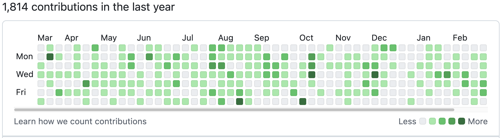
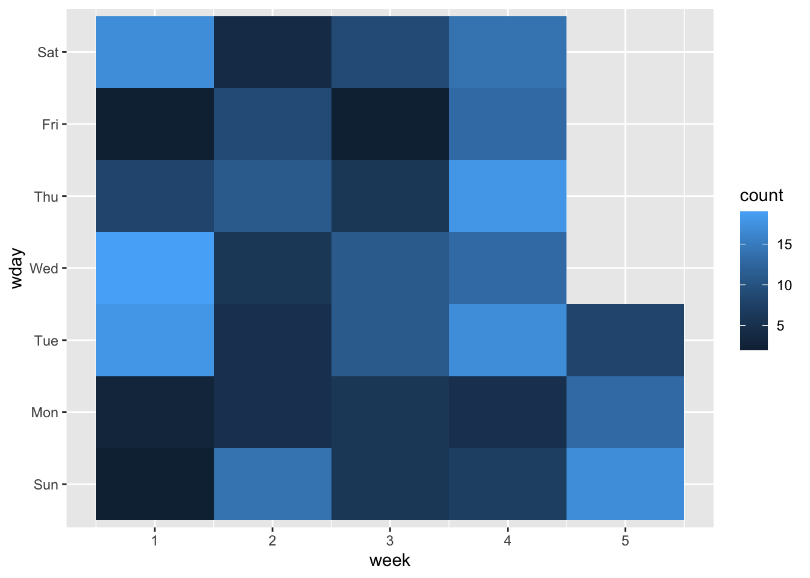
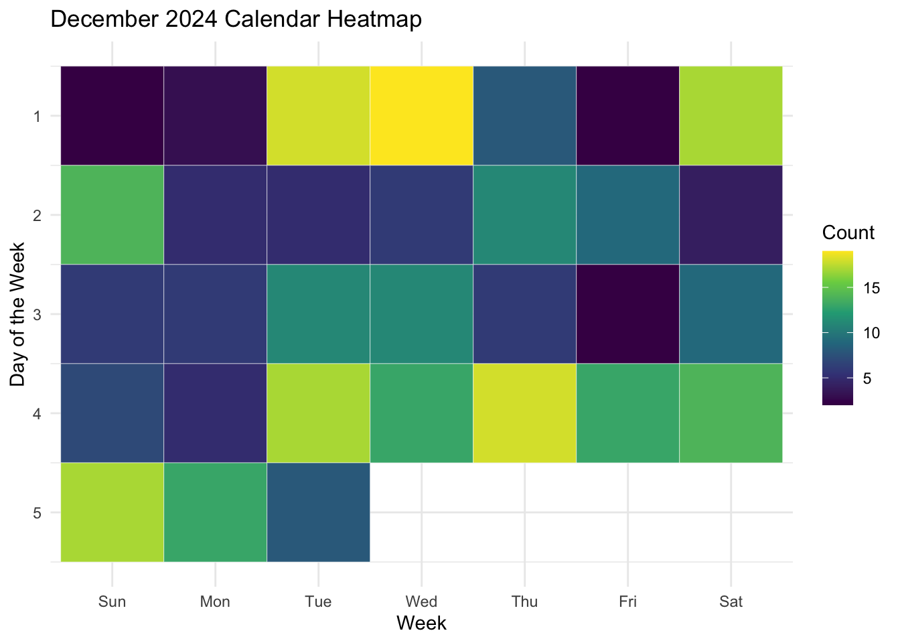
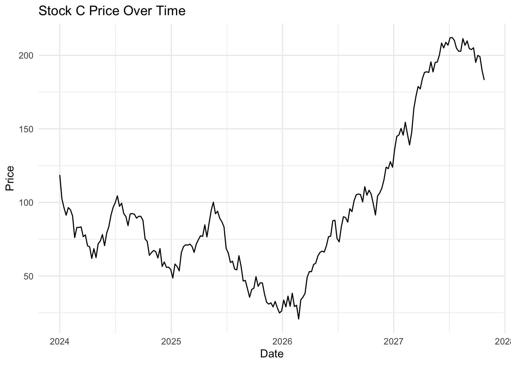
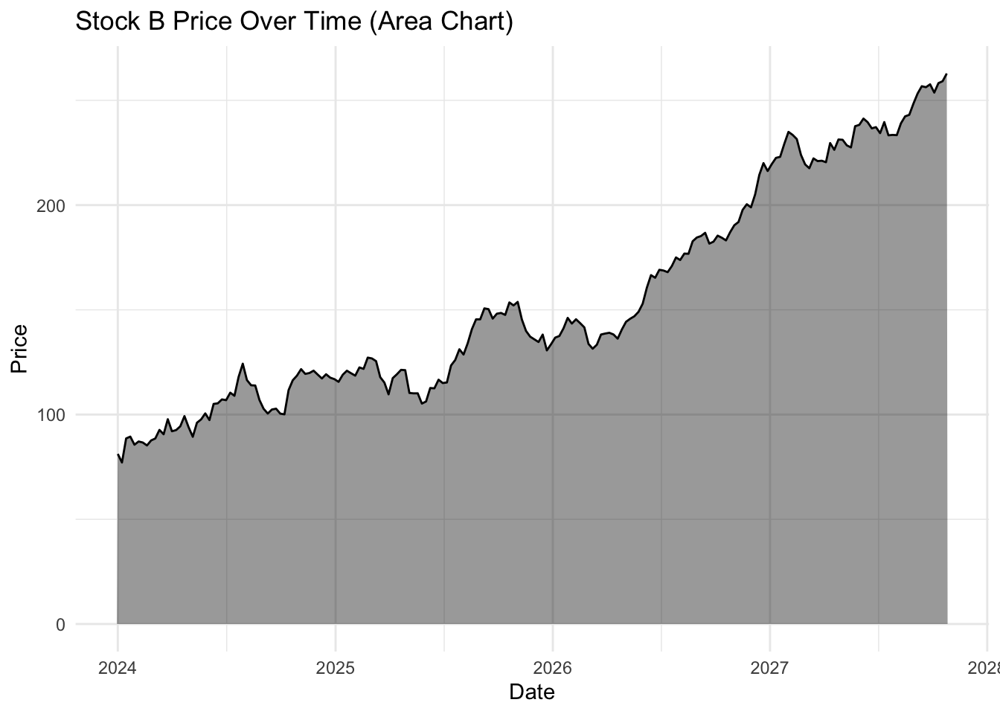
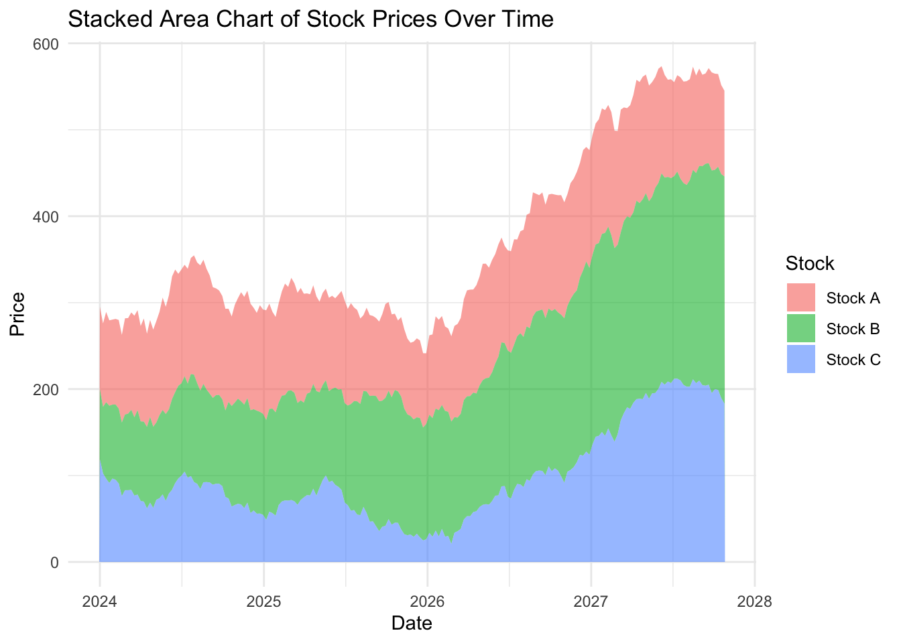

Visualization for ourselves - Exploratory Analysis
Visualization is most often thought of as something we do for other people, to share some piece of knowledge we have. But equally important is the role visualization can play in us learning something about our data. Visualization can reveal trends or associations that we would otherwise struggle to identify in observations stored in rows and columns.
In this section we will perform some quick data visualizations that we can use for our own observations. The output of this section does not need to be overly attractive, but it does need to be clear and should ‘standalone’ (i.e., should speak for itself, without the need of accompanying notes).
The aims for this section are to give you the opportunity to practice some of the most important code used in visualizations and to force you to think about visualization: what types of figures work well for certain data, how to display the information you want to convey.
We will examine one type of graph to represent four different types of data: distribution, correlation, parts of a whole, and evolution (change over time).
Distribution
Distribution plots are a good place to start any data analysis, because many statistical tests rely on the assumption of a normal distribution. We may also make our own assumptions about how data is similar or different between different groups. The classic argument for distribution plots is the “datasaurus dozen” - a set of 13 datasets with identical summary statistics (same mean of x, mean of y, Std Dev etc.,) but when plotted reveal funny patterns (including points in the shape of a dinosaur).
Distribution matters!
Beeswarm plots with ggbeeswarm
Here we will use a type of plot, called a beeswarm plot, to highlight the power of visualization.
Beeswarm plots can be made using a standalone package (install.packages(“beeswarm”)) or using a package that extends ggplot2 (install.packages(“ggbeeswarm”)). We will use the later, since it let’s us work within the ggplot format we have looked at already.
Packages and setup
Install the ggbeeswarm package, then load the ggbeeswarm and palmerpenguins packages.
── Conflicts ────────────────────────────────────────── tidyverse_conflicts() ──
✖ dplyr::filter() masks stats::filter()
✖ dplyr::lag() masks stats::lag()
ℹ Use the conflicted package (<http://conflicted.r-lib.org/>) to force all conflicts to become errors
Beeswarm plots
Like with the geom_boxplot() we looked at in the previous episode, we need to specify where the data comes from and how the data is mapped. Beeswarm plots are simple and we will initially only need to specify the x and y axis data.
Note:When running this code, ggplot gives us a warning that rows were removed due to missing values. I’ve added a hidden line of code to suppress these warnings.
With this plain plot we can see what beeswarm is doing - when points on the y axis share a value they are moved horizontally so that overlapping points can be identified. This concept is commonly referred to as “jitter”, and “jitter plots” are a class of chart. Beeswarm plots are an implementation of jitter plots that aim to be compact with as little as possible overlap of points. This gives us the ability to see density through the width of the plot, similar to how a violin plot (geom_violin) works.
Distribution plots are a good opportunity to introduce two new parameters we can adjust in ggplot: size and alpha.
Size is simply the size of the data point. We can assign a single value for all points, or can assign a continuous variable.
Alpha is the level of transparency. When data points are too large (from the size argument), or too numerous, the points can overlap one another (a problem called “overplotting”). This is particularly problematic outside of beeswarm. When we set alpha to something less than 1, the points become somewhat transparent. Therefore, if two points overlap one another, it is clear from the change in colour (as two transparent but overlapping points are darker than a single point).
(I’d argue that increasing the size and decreasing the alpha has decreased the quality of our plot, but it’s just for the purpose of demonstration).
geom_quasirandom and dangerous distributions
geom_quasirandom() is a function very similar to geom_beeswarm(), but instead of strictly moving points, they are quasi-randomly moved.
Exercise: Compare the plot below with the plot above. What is different between them?
Dangers of distributions
Personally, I find these two plots give very different impressions of the data. In the plot below, the wide shape (particularly for the Chinstrap species) is reminiscent of a normal distribution and it subconciously reminds me of that. Looking at the plot above, I don’t immediately think of a normal distribution. It’s easy to imagine a situation where the wrong choice of plot and a lapse in concentration could give the wrong impression.
Your choice of visualization can have a strong impact on what people see.
We can add two other functions to make this plot much easier to read. First, the theme_minimal() function is a quick way to set a global theme to the plot and make it less cluttered. The second function is labs(), which we use to add a title and x and y axes labels. We will cover themes more later, but adding theme_minimal() to every plot we do today will keep them looking tidy and coherent.
Heatmaps can be used to visualize values across two dimensions using colour. In a biological context this could be gene expression values across a range of genes for a set of samples. This is often combined with some type of clustering (e.g., unsupervised hierarchical clustering with k-means) to identify patterns of gene expression which differ between sample groups.
Here we will use geom_tile() to create a particular type of heatmap called a “calendar heatmap”, which will display a value on a given day for a selected time period. The example below is captured from github, which display the number of commits (saves) a user made across the year.

Github annual contributions
That’s a lot of commits!
Calendar heatmap
We will create a simple calendar heatmap to demonstrate the concept. Remember, the goal here is to expose you to different types of plots and for you to practice using ggplot2.
Generating example data
First, we will generate some example data. Copy and paste this code, because it is not central to our understanding:
set.seed(0982)month_data <-tibble(date =seq(as.Date("2024-12-01"), as.Date("2024-12-31"), by ="day"),count =sample(1:20, 31, replace =TRUE) # Random counts per day) |>mutate(wday =wday(date, label =TRUE, abbr =TRUE), # Day of the week (Sun-Sat)week = (day(date) -1) %/%7+1# Week number (1 to 5) )month_data |>head()
Now we will create the plot with geom_tile(). Like with the geom_boxplot() we looked at in the previous episode, we need to specify where the data comes from and how the data is mapped. With geom_tile() we will always need to use aes() to specify the x and y, and we will also specify the variable that is used to determine the colour of each tile, which we do with “fill =”. In our example we will map the count variable to fill.
ggplot(data = month_data,mapping =aes(x = week, y = wday, fill = count)) +geom_tile()

This is a good starting point in that we have functionally sketched the data into the plot type. However, we can see that it the layout does not match our expectations for a calendar: it reads the days in reverse (Saturday, Friday, Thursday etc.,), and has the week on the x axis. It is also missing a title, and axes labels, and it doesn’t have particularly high contrast between high and low values.
To correct these issues we will:
Swap the x and y axis with the aes() function.
Use the scale_y_reverse() function to reverse the Y-axis (which will now be weeks) so that the last value (week 5) is placed at the bottom.
Add the scale_fill_viridis_c() function to change the colour of the fill. The “scale_[argument]_viridis” set of functions are used to select a colour blind-friendly pallette with high contrast.
Use the labs() function to add title, x and y axis labels, and rename the fill (legend) variable.
Additionally, we will add colour = “white” as an argument for geom_tile(), which will result in a fine white grid separating our tiles, and add the theme_minimal() function to reduce the visual clutter of the grey background in the plot.
Exercise: Use the code block and tips above to create an improved version of the calendar heatmap.
You do not need to do all of these changes, but try them out if you can! Remember to add a “+” at the end of each line when adding new functions.
Solution
ggplot(data = month_data,mapping =aes(x = wday, y = week, fill = count)) +geom_tile(colour ="white") +scale_fill_viridis_c() +scale_y_reverse() +theme_minimal() +labs(title ="December 2024 Calendar Heatmap", x ="Week", y ="Day of the Week", fill ="Count")

Parts of a whole
In this section we will take a break from executing code and look at some examples. This is an opportunity to introduce you to the excellent resource that is the R-graph-gallery. We will scroll down to the “Parts of a whole” section, and walk through how this resource not only shows you different types of plots you can create, but provides you with code and reproducible examples.
You can jump straight to our first example, the waffle chart, here. The R-graph-gallery gives an overview of the type of chart and highlights some of the key ways to get started. In the case of the waffle chart we can either use a dedicated package or explore how to build a waffle chart with ggplot2 syntax. Finally, there are three examples of high quality waffle charts - click on any of these three charts to get a detailed explanation of the code used to create the chart and an example dataset. This example by Muhammad Azhar is my favourite, and they have all the code required to help you build your own version.
Back on the main page we can see that this same level of information exists for other chart types too. Take two minutes to pick one of the Parts of a Whole plots and explore some of the information about this type of chart.
Evolution (over time)
Here we will look at three variations of the line plot, which is used to show changes in a variable over time.
Generate a dataset
set.seed(02) # Please set this seed for this example# Create stock price data for three different stocksdates <-seq.Date(from =as.Date("2024-01-01"), by ="week", length.out =200)stocks <-tibble(date =rep(dates, times =3),stock =rep(c("Stock A", "Stock B", "Stock C"), each =length(dates)),price =c(100+cumsum(rnorm(length(dates), mean =0, sd =5)), # Stock A fluctuates around 10080+cumsum(rnorm(length(dates), mean =0, sd =4)), # Stock B fluctuates around 80120+cumsum(rnorm(length(dates), mean =0, sd =6)) # Stock C fluctuates around 120 ))
What is set.seed?
What is set.seed? set.seed() is a function that feeds into any function that will randomly select or generate values. If we all use set.seed with the same number value, we will all get the same results, even though we are about to ‘randomly’ simulate some data. In future you can use any numeric value for set.seed(), so long as you keep it consistent within experiments.
Line chart with geom_line()
The simplest plot for change over time is geom_line().
ggplot(stocks %>%filter(stock =="Stock C"), aes(x = date, y = price)) +geom_line() +labs(title ="Stock C Price Over Time", x ="Date", y ="Price") +theme_minimal()

Visual interest with geom_area()
The geom_area() function uses the same principal but also includes a filled or shaded area below the line. This is the same data, but due to the shading makes the whole plot look less empty.
ggplot(stocks %>%filter(stock =="Stock B"), aes(x = date, y = price)) +geom_area(fill ="black", alpha =0.4) +geom_line(color ="black", size =0.5) +# Keeps the line for claritylabs(title ="Stock B Price Over Time (Area Chart)", x ="Date", y ="Price") +theme_minimal()
Warning: Using `size` aesthetic for lines was deprecated in ggplot2 3.4.0.
ℹ Please use `linewidth` instead.

The choice of geom_line() or geom_area() is purely aesthetic.
Stacked area chart
The stacked area chart can be used to create a strong visual impact, especially if the correct colours are chosen. Here’s an example from Cédric Scherer:
ggplot(stocks, aes(x = date, y = price, fill = stock)) +geom_area(alpha =0.6) +# Fill areas with transparencylabs(title ="Stacked Area Chart of Stock Prices Over Time",x ="Date", y ="Price", fill ="Stock") +theme_minimal()

On the dubious rise of our stocks…
…and the flaw with stacked area charts
Looking at the stacked area plot you would be forgiven for thinking all three stocks have increased over time. Looking more closely you will notice that Stock A has not increased in value and is almost exactly where it started.
Because stacked area plots can be misleading, they are not recommended as a type of visualization.
You can check the actual change in value of Stock A by repeating the code for the line or single variable area plot, changing the code to filter(stock == “Stock A”) (and updating the figure title of course).
An alternative to stacked area plots is the use of facet, which will allow us to visualize multiple stocks at once by creating individual panels.
Summary
The two key messages from this episode are:
There are lots of different chart types available to you, and they mostly follow the same template with slight variations in the geom_() function and the arguments supplied.
How you visualize your data can have an impact on what other people see. The human brain is amazing, but even on our best days we make assumptions, or can be distracted, and reach the wrong conclusion. Strive to make your data as clear and transparent as possible.

{kind=link}
{kind=link}